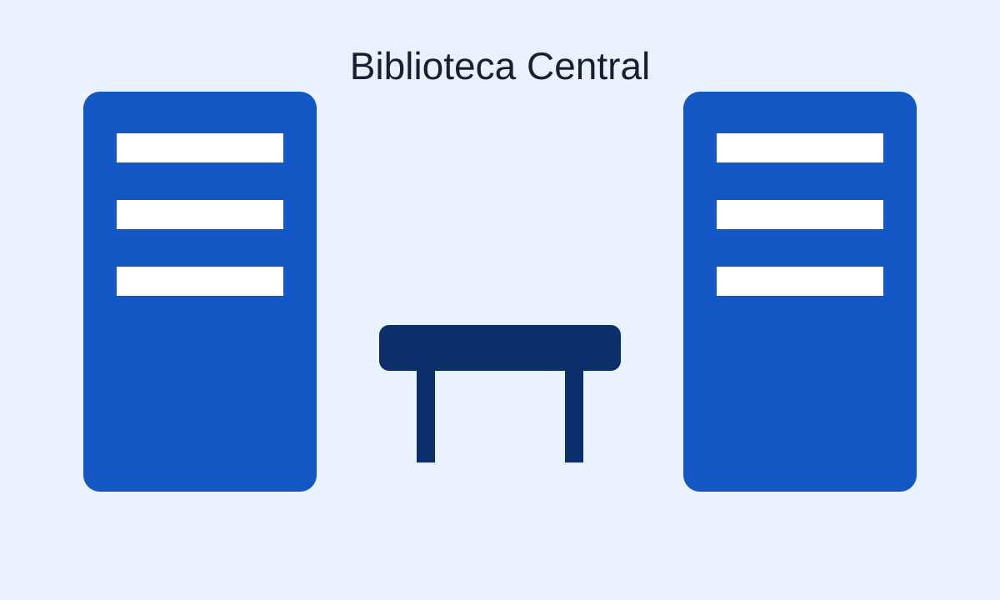
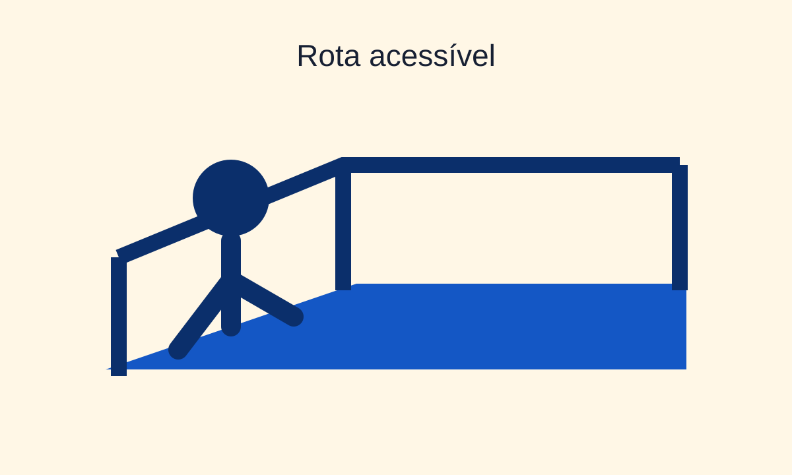

Estudo
Biblioteca Central
Espaço disponível para estudo e consulta de livros.
Ver detalhesInformação para circular com autonomia
Consulte localização, horário e recursos de acessibilidade antes de sair.
Explorar locaisConheça alguns espaços disponíveis no campus.

Estudo
Espaço disponível para estudo e consulta de livros.
Ver detalhes
Tecnologia
Espaço equipado com computadores para aulas e atividades práticas.
Ver detalhes
Acessibilidade
Conheça os caminhos acessíveis para circular pelo campus com mais segurança e autonomia.
Ver detalhes